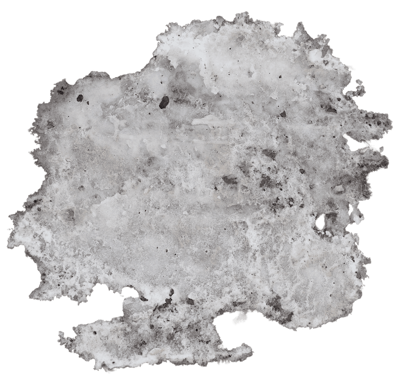
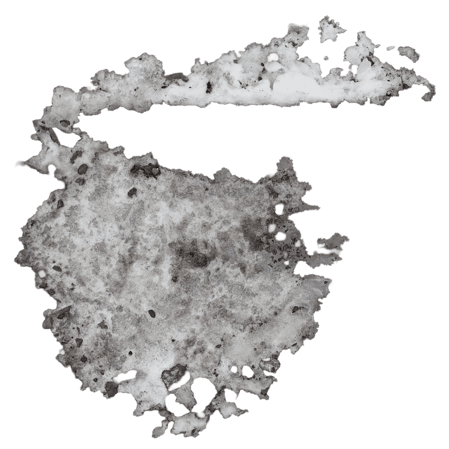
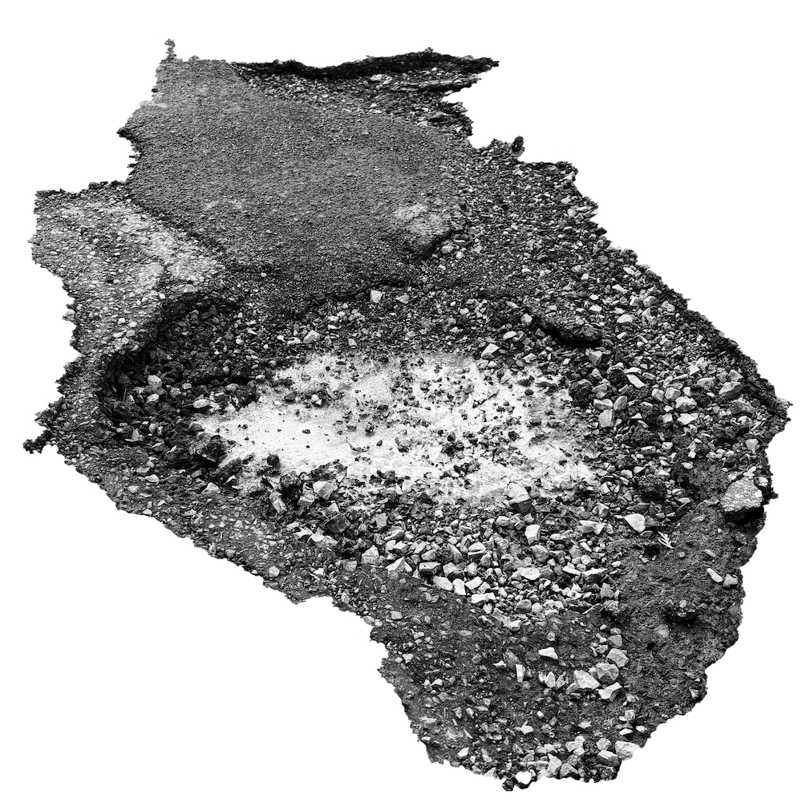
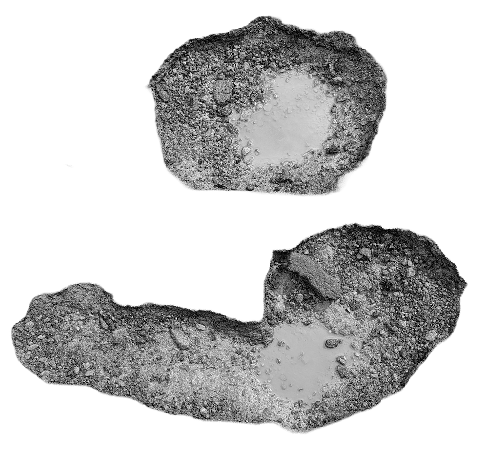
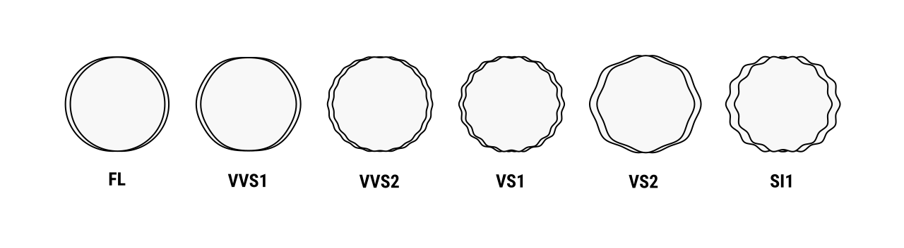
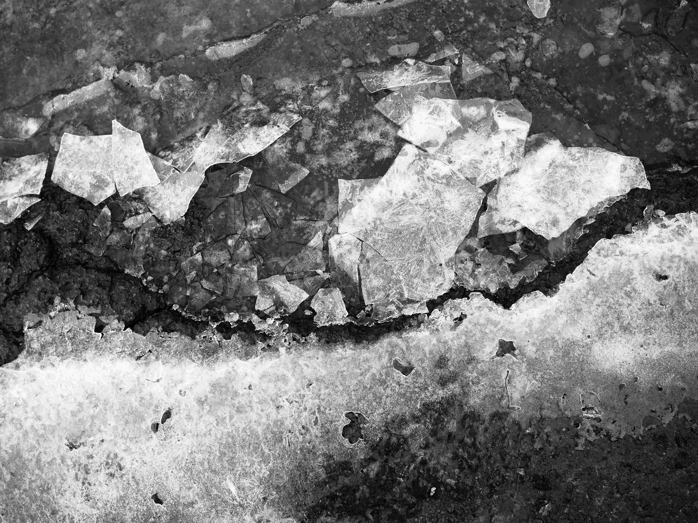

A Moment to Remember
Choose the perfect type of pothole to match your aura.

1.03 m Carat, Roundish Cut, Ice Grey

1.24 m Carat, Peninsula Cut, Slush White

0.57 m Carat, Never Ending Cut, Lava Black

0.26 m Carat, Twin Crevasse Cut, Silver
Edge Clarity Scale *
Each formation represents a singular convergence of pressure, climate, and time. All potholes are therefore graded according to our standardized system measuring surface definition and fracture visibility.

* Flawless (FL)
Very, Very Slightly Included (VVS1 and VVS2)
Very Slightly Included (VS1 and VS2)
Slightly Included (SI1)

Naturally Sourced
Each specimen is responsibly documented at its site of origin. Seasonal exposure, municipal intervention, and traffic density contribute to unique formation characteristics.
Join the family
Subscribe for exclusive access to newly documented formations, early notice of seasonal releases, and private viewing opportunities across the city. Membership ensures you remain closely connected to our evolving collection and the conditions that shape it. For partnership opportunities, please contact us.